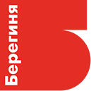
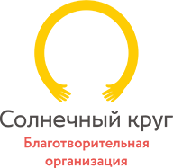
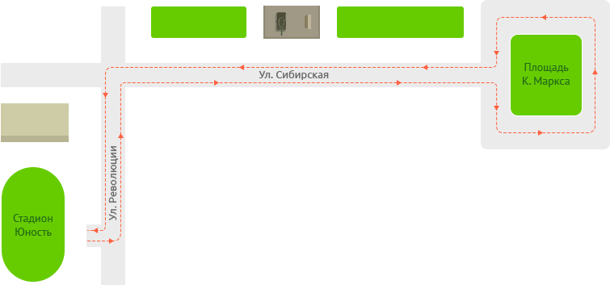

Благотворительный забег
В Перми состоится 2-й благотворительный забег «На одном дыхании» и мы снова пробежим за здоровье детей!
Это яркое масштабное общегородское мероприятие, направленное на развитие благотворительности и здорового образа жизни.
Вырученные средства пойдут на лечение и реабилитацию детей с тяжелыми заболеваниями и на помощь детям-сиротам.
О забеге
Как это было в прошлом году
В 2016 году с нами пробежали 700 пермяков. Мы собрали 200 тыс. рублей.
Эти деньги позволили оплатить поиск в международном регистре и приезд неродственного донора костного мозга для Даниила Просвирнина. Половина собранных средств потрачена на двухмесячную зарплату больничным няням.
Благотворительность
Как мое участие поможет детям?
Деньги, которые вы пожертвуете, пойдут на лечение и сопровождение детей в больницах.
Фонд «Берегиня» купит лекарства и оплатит дорогостоящее лечение. Благотворительная организация «Солнечный круг» наймет нянь для детей-сирот.
- 300 Р—
Можно купить пластырь из специального нетканного материала, чтобы при смене катетера не поранить кожу ребенка, или оплатить три часа работы больничной няни.
- Три спортсмена
Взнос трех спортсменов поможет пополнить недельный запас специального питания после химиотерапии.
- 20 000 Р—
Оплата дороги пяти подопечным в реабилитационный лагерь.
Финансирование
Какие проекты будут профинансированы
- 
Фонд «Берегиня» реализует проект «Неотложка»
«Неотложка» помогает родителям детей с тяжёлыми заболеваниями оплатить обследования, HLA-типирование, дорогостоящие препараты, проезд к месту лечения, реабилитационные процедуры.
- 
Благотворительная организация «Солнечный круг» проект «Служба Айболита»
«Служба Айболита» заботится о детях в больничных палатах, помогает преодолеть страх перед уколами и чувство одиночества, организует досуг и классное настроение.
Как принять участие

Выбираем категорию и регистрируемся

Оплачиваем взнос на участие в забеге

Приходим 3 июня получаем набор бегуна

Бежим, награждаем участников и считаем сбор!
Призовой фонд – 200 тыс.рублей
Маршрут
Какой маршрут забега?
 Место старта — стадион «Юность». Маршрут проложен по улице Революции, Сибирской до площади Карла Маркса и обратно. Спортсмены пробегут две дистанции: 2 км (1 круг) и 10 км (4 круга).
Расписание мероприятий
На стадионе «Юность»
- 9:00 – 10:45 Регистрация участников
- 11:00 Старт забега на 2 км
- 11:40 Старт забега на 10 км
- 12:00 Старт забега «Fun-run»
В парке им. Горького
- 10:00 Начало праздника на главной сцене
- 12:30 Награждение победителей забега на 2 км
- 13:00 Награждение победителей забега на 10 км
- до 15:00 Развлекательная программа
Беговые категории участников и стоимость взноса
| Малыши | Дети | Студенты | Взрослые | Пенсионеры | Fun Run |
|---|---|---|---|---|---|
| до 4 лет | от 4 до 18 лет | студенческий билет | женщины от 18 до 55 лет мужчины от 18 до 60 лет | женщины от 55 лет мужчины от 60 лет | без ограничений |
| бесплатно | 150 руб. | 350 руб. | 2 км – 350 руб. 10 км – 500 руб. | 350 руб. | 300 руб. |
Заявка на участие
Заполняйте данные участников забега, оплачивайте благотворительный взнос банковской картой и не забудьте получить наборы бегуна перед стартом.
Информация о партнёрах
Ответим на любые вопросы: 233-11-22, 233-02-02, 8 (982) 450-60-70 –Александра